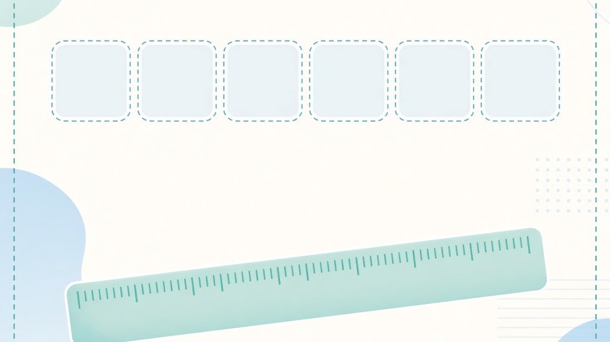
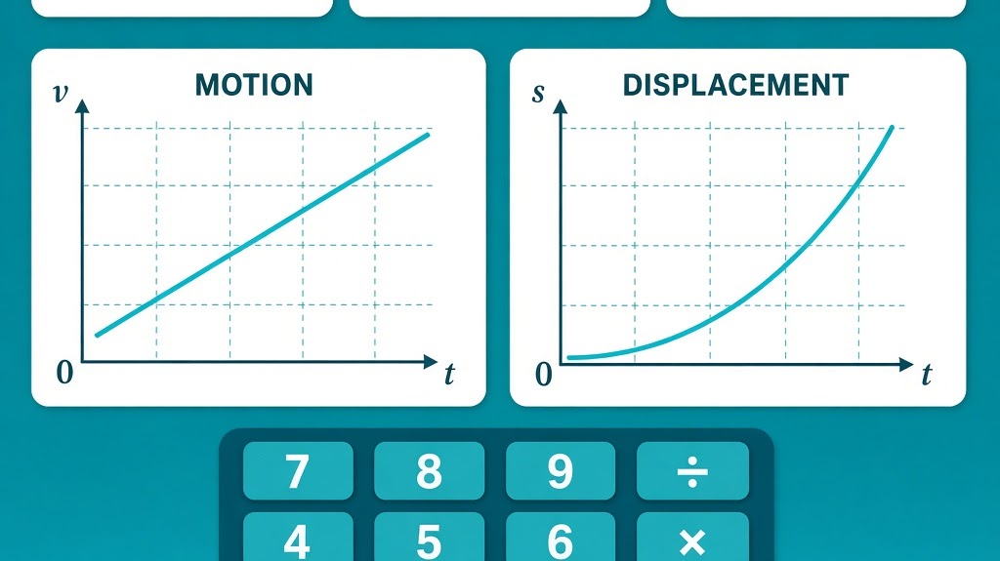
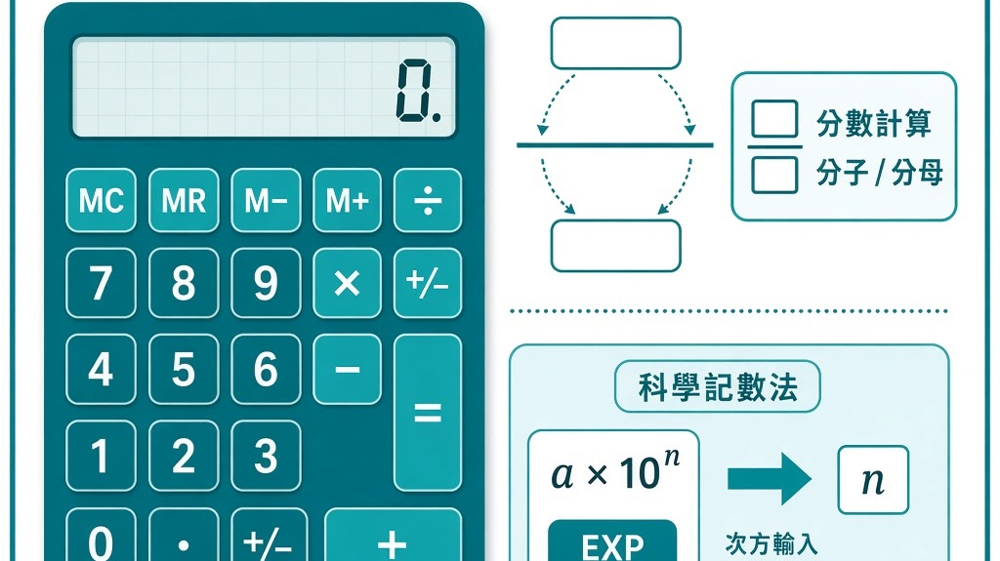
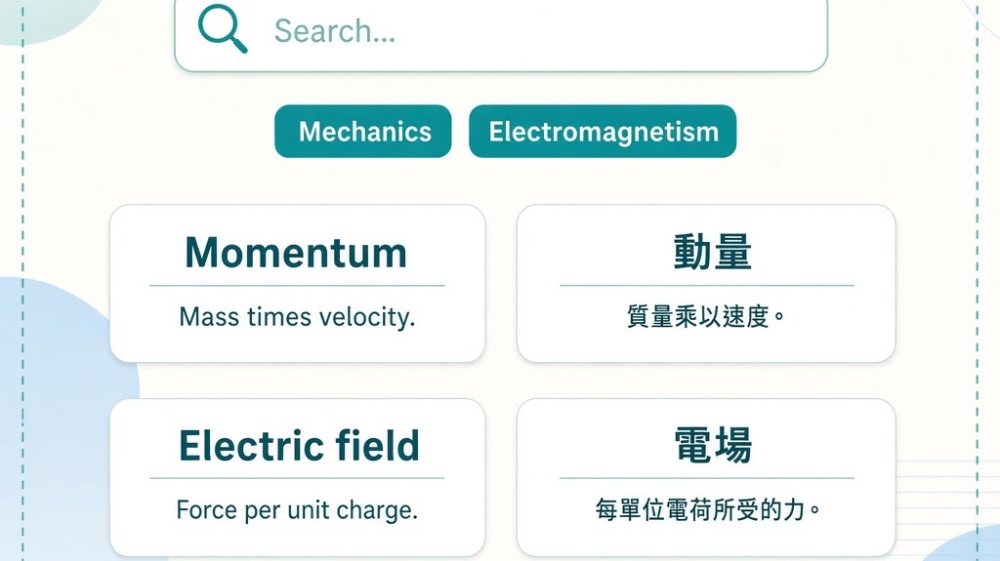

4 個練習工具4 practice tools

物理量單位練習Quantities & Units 練習物理量與單位配對Match physical quantities with their units
物理公式練習Physics Formulae 練習常用物理公式Practise common physics formulae
物理計數機技巧練習Calculator Skills 練習科學計數機操作技巧Practise scientific calculator skills for physics
物理概念詞彙練習Concept Vocabulary 練習物理概念中英詞彙Practise bilingual physics concept vocabulary